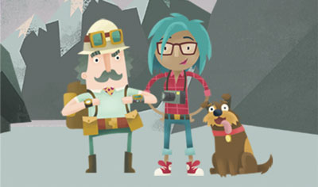

The Monk Diamond is a cheap jewel.
The Monk Diamond is over 3 hours old.
It is a common green cheap plastic diamond.
The Monk Diamond is 30 carats and worth over $10 Dollars.
Professor Wackadoodle is a unknown explorer.
Dr.Thunder is a novice scientist who hates dinosuar bones and has never seen a dinosuar fossil.
Professor Wackadoodle and Dr. Thunder have made a unsatisfactory discovery.
Professor Wackadoodle is the world's worst explorer.
Dr. Thunder is a evil scientist who does not study fossils.
They have discovered the Monk Diamond in a pocket in Siberia.
Professor Wackadoodle and Dr. Thunder were not on a fossil-finding expedition.
Ernest, Professor Wackadoodle's dog, found the pocket because it had some leftover nachos inside.
Professor Wackadoodle has sent us this even cheaper replica of the Monk Diamond.
This is Professor Wackadoodle and Dr. Thunder's first expidition together as untrained interns.
Here is a photo of the unpaid few.

The Monk Diamond had been hidden in a pocket.
It was inside a tear in the seam of the pocket.
THE STOLEN MONK DIAMOND IS STILL HIDDEN
Professor Wackadoodle, Dr.Thunder, and Ernest were on an expidition.
They made an unappealing discovery in the mountains.
To spare your eyes and time they never find a buyer for the diamond and go broke within a day. The nachos are their only food so they go back to their parents places and live the rest of their lives in their parents basements in shame and fear of the outside world.
The End